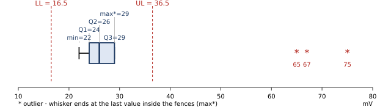
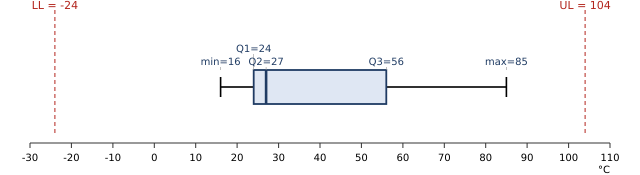

R · Real Quiz 1 (LA40 + LB40), fully solved
These are the prof's actual questions. Questions 5 and 6 were identical in both classes. Each part is laid out as Known → Method → Working → Answer → Check, which is a good layout to copy onto your answer sheet.
LA40 · Question 1: variable type and measurement scale
Soal. Laboratorium Computer Engineering meneliti kinerja perangkat dengan variabel: jenis sistem kontrol, waktu respons sensor, jenis sensor, kecepatan pemrosesan data, jenis mikrokontroler, tingkat akurasi sensor, jumlah perangkat yang terhubung, status operasional mesin, konsumsi daya sistem, jenis protokol komunikasi, waktu siklus proses otomatis, suhu operasional perangkat, mode pengoperasian sistem, tingkat kesalahan pembacaan sensor, jumlah kegagalan sistem otomatis. Sebutkan jenis variabel dan skala pengukuran masing-masing.
For each of the 15 variables, give the variable type and the measurement scale.
Method: the decision steps on {{p:s1-scale}}. Rule of thumb: "jenis …" (type of) is nominal, "waktu / kecepatan / daya / jumlah" is ratio, "suhu °C" is interval.
| # | Variabel | Jenis (type) | Skala | Alasan (reason) |
|---|
| 1 | Jenis sistem kontrol | Kualitatif | Nominal | categories (open-loop, closed-loop, PID) with no order |
| 2 | Waktu respons sensor | Kuantitatif kontinu | Rasio | measured time; 0 ms = no time |
| 3 | Jenis sensor | Kualitatif | Nominal | labels (ultrasonik, IR, suhu) |
| 4 | Kecepatan pemrosesan data | Kuantitatif kontinu | Rasio | e.g. MB/s; 0 = no processing |
| 5 | Jenis mikrokontroler | Kualitatif | Nominal | labels (Arduino, ESP32, STM32) |
| 6 | Tingkat akurasi sensor | Kuantitatif kontinu | Rasio | a percentage; 0% = no accuracy. If given as tinggi/sedang/rendah: kualitatif, ordinal. |
| 7 | Jumlah perangkat yang terhubung | Kuantitatif diskrit | Rasio | a count; 0 = no devices |
| 8 | Status operasional mesin | Kualitatif | Nominal | ON/OFF/standby, no order |
| 9 | Konsumsi daya sistem | Kuantitatif kontinu | Rasio | watts; 0 W = no power |
| 10 | Jenis protokol komunikasi | Kualitatif | Nominal | labels (I2C, SPI, UART, Wi-Fi) |
| 11 | Waktu siklus proses otomatis | Kuantitatif kontinu | Rasio | measured time |
| 12 | Suhu operasional perangkat | Kuantitatif kontinu | Interval | °C: 0°C is not "no heat", and 40°C is not "twice as hot" as 20°C |
| 13 | Mode pengoperasian sistem | Kualitatif | Nominal | manual/otomatis. If the modes are levels (manual < semi-otomatis < otomatis), ordinal is defensible. Write the assumption. |
| 14 | Tingkat kesalahan pembacaan sensor | Kuantitatif kontinu | Rasio | error rate in %; 0% = no errors |
| 15 | Jumlah kegagalan sistem otomatis | Kuantitatif diskrit | Rasio | a count; 0 = no failures |
Summary line for the answer sheet: Kualitatif nominal: 1, 3, 5, 8, 10, 13. Kuantitatif kontinu rasio: 2, 4, 6, 9, 11, 14. Kuantitatif diskrit rasio: 7, 15. Kuantitatif kontinu interval: 12.
LB40 · Question 3: choose 3 numeric and 3 categorical variables, with scales
Soal. Seorang engineer mengembangkan sensor otomatis untuk inspeksi kualitas barang. Tentukan 3 variabel numerik dan 3 variabel kategorik, beserta skala pengukurannya.
Propose 3 numerical and 3 categorical variables for an automatic quality-inspection sensor, and give each one's scale.
Any sensible answer works. The marks come from the correct scale and a reason. A strong answer covers all four scales.
| Variabel | Jenis | Skala | Alasan |
|---|
| Numerik | Berat barang (gram) | Kuantitatif kontinu | Rasio | 0 g = no weight; 200 g is twice 100 g |
| Jumlah cacat per barang | Kuantitatif diskrit | Rasio | a count, true zero |
| Suhu permukaan barang (°C) | Kuantitatif kontinu | Interval | 0°C is not "no temperature" |
| Kategorik | Status inspeksi (lolos / tidak lolos) | Kualitatif | Nominal | two labels, no order |
| Jenis cacat (gores, retak, penyok) | Kualitatif | Nominal | labels, no order |
| Grade kualitas (A / B / C) | Kualitatif | Ordinal | A > B > C, but the gaps are not measurable |
Other good choices: dimensi/panjang (rasio), waktu inspeksi (rasio), kecerahan warna (rasio), warna barang (nominal), tingkat keparahan cacat ringan/sedang/berat (ordinal).
LA40 · Question 2: signal amplitude data (n = 15, mV)
Soal. Data amplitudo sinyal sensor getaran (mV): 22, 75, 24, 67, 23, 26, 25, 28, 24, 26, 23, 25, 29, 27, 65.
- Hitunglah nilai mean
- Tentukan five number summary
- Hitung coefficient of variation
- Buatlah diagram stem and leaf
- Gambarkan boxplot dan identifikasi apakah terdapat outlier.
Step 0: sort and number the data (do this first; the bold values are Q1, median, Q3)
| Position | 1 | 2 | 3 | 4 | 5 | 6 | 7 | 8 | 9 | 10 | 11 | 12 | 13 | 14 | 15 |
|---|
| Value | 22 | 23 | 23 | 24 | 24 | 25 | 25 | 26 | 26 | 27 | 28 | 29 | 65 | 67 | 75 |
|---|
n = 15 · Σx = 509 · Σx² = 21989
a. Mean
Method
\(\bar x=\dfrac{\sum x_i}{n}\)
Working
\(\bar x=\dfrac{509}{15}\)
Answer
x̄ = 33.9333 mV
Check
STAT 1-VAR → x̄ = 33.9333. The mean is far above most values (22–29) because of 65, 67, 75. That already hints at outliers.
b. Five-number summary
Method
Positions for n = 15: Q1 at 0.25(16) = 4, median at 0.5(16) = 8, Q3 at 0.75(16) = 12.
Working
Min = x₍₁₎ = 22 · Q1 = x₍₄₎ = 24 · Median = x₍₈₎ = 26 · Q3 = x₍₁₂₎ = 29 · Max = x₍₁₅₎ = 75
Answer
Min 22, Q1 24, Median 26, Q3 29, Max 75
c. Coefficient of variation
Method
\(s^2=\dfrac{\sum x^2-(\sum x)^2/n}{n-1}\), then \(CV=\dfrac{s}{\bar x}\times100\%\)
Working
\(s^2=\dfrac{21989-509^2/15}{14}=\dfrac{21989-17272.0667}{14}=\dfrac{4716.9333}{14}=336.9238\)
\(s=\sqrt{336.9238}=18.3555\) mV
\(CV=\dfrac{18.3555}{33.9333}\times100\%\)
Answer
CV = 54.09%. The amplitude is not stable: the SD is more than half of the mean, mainly because of the three large values.
Check
STAT → sx = 18.3555. With σx (÷ n) you would get 52.26%, which is the wrong formula for a sample.
d. Stem-and-leaf
Method
stem = tens digit, leaf = ones digit. Keep the empty stems 3, 4, 5 to show the gap.
Answer
Stem | Leaf
2 | 2 3 3 4 4 5 5 6 6 7 8 9
3 |
4 |
5 |
6 | 5 7
7 | 5
Key: 2 | 2 = 22 mV
e. Boxplot and outliers
Working
IQR = 29 − 24 = 5
LL = 24 − 1.5(5) = 16.5
UL = 29 + 1.5(5) = 36.5
65, 67, 75 > 36.5. The largest value inside is 29, so the upper whisker ends at 29. The lowest value 22 > 16.5, so the lower whisker ends at 22.
Answer
Outliers: 65, 67, 75 mV. The rest of the data is tightly packed and right-skewed (mean 33.9 > median 26).

LB40 · Question 1: machine temperature data (n = 15, °C)
Soal. Data suhu mesin (°C): 85, 16, 24, 27, 25, 56, 28, 24, 25, 27, 16, 25, 53, 76, 58.
- mean
- median
- interquartile range (IQR)
- standar deviasi
- Gambarkan boxplotnya. Tentukan apakah terdapat outlier.
Step 0: sort (bold = Q1, median, Q3)
| Position | 1 | 2 | 3 | 4 | 5 | 6 | 7 | 8 | 9 | 10 | 11 | 12 | 13 | 14 | 15 |
|---|
| Value | 16 | 16 | 24 | 24 | 25 | 25 | 25 | 27 | 27 | 28 | 53 | 56 | 58 | 76 | 85 |
|---|
n = 15 · Σx = 565 · Σx² = 28091
a. Mean
Working
\(\bar x=\dfrac{565}{15}\)
Answer
x̄ = 37.6667 °C
b. Median
Working
position 0.5(15 + 1) = 8 → x₍₈₎
Answer
Median = 27 °C. The median is below the mean, so the data are skewed right.
c. IQR
Working
Q1 = x₍₄₎ = 24 · Q3 = x₍₁₂₎ = 56 · IQR = 56 − 24
Answer
IQR = 32 °C
d. Standard deviation (sample)
Working
\(s^2=\dfrac{28091-565^2/15}{14}=\dfrac{28091-21281.6667}{14}=\dfrac{6809.3333}{14}=486.3810\)
\(s=\sqrt{486.3810}\)
Answer
s = 22.0540 °C
Check
STAT → sx = 22.0540 (σx = 21.3062 is the population version). CV would be 22.054/37.667 = 58.55%.
e. Boxplot and outliers
Working
LL = 24 − 1.5(32) = −24 · UL = 56 + 1.5(32) = 104. Every value is between −24 and 104, so the whiskers run to the min 16 and the max 85.
Answer
No outliers (tidak terdapat outlier). The box is long on the right (median 27 is close to Q1 = 24), so the distribution is skewed right.
Trap
76 and 85 look extreme, but IQR = 32 makes the fences wide. Compute the fences; never guess.
Five-number summary (not asked, but useful for drawing): 16, 24, 27, 56, 85. Stem-and-leaf: 1|6 6 · 2|4 4 5 5 5 7 7 8 · 3| · 4| · 5|3 6 8 · 6| · 7|6 · 8|5

LA40 · Question 3: contingency table (OS × condition)
Step 0: add the totals
| Sistem Operasi | Baik | Sedang | Rusak | Total |
|---|
| Windows | 40 | 10 | 10 | 60 |
|---|
| Linux | 15 | 15 | 10 | 40 |
|---|
| macOS | 20 | 5 | 5 | 30 |
|---|
| Total | 75 | 30 | 25 | 130 |
|---|
a. P(macOS dan sedang): joint
Method
cell ÷ grand total
Answer
\(\P(M\cap S)=\dfrac{5}{130}=\) 0.0385
b. P(Windows atau rusak): union
Method
\(\P(W\cup R)=\P(W)+\P(R)-\P(W\cap R)\)
Working
\(\dfrac{60}{130}+\dfrac{25}{130}-\dfrac{10}{130}=\dfrac{75}{130}\)
Answer
0.5769
Check
Count the cells directly: Windows row 40 + 10 + 10 plus the other rusak cells 10 + 5 = 75 ✓
c. P(Linux | rusak): conditional
Method
The condition is "rusak", so divide by the rusak column total (25).
Answer
\(\P(L\mid R)=\dfrac{10}{25}=\) 0.4
d. P(sedang | macOS)
Answer
\(\dfrac{5}{30}=\) 0.1667 (divide by the macOS row total)
e. P(Windows | baik)
Answer
\(\dfrac{40}{75}=\) 0.5333 (divide by the baik column total)
f. Are OS type and condition independent?
Method
Independent only if \(\P(A\mid B)=\P(A)\) for every cell. One counter-example is enough to say "no".
Working
\(\P(W\mid \text{Baik})=0.5333\) but \(\P(W)=\dfrac{60}{130}=0.4615\).
Or: \(\P(W\cap \text{Baik})=\frac{40}{130}=0.3077\) vs \(\P(W)\P(\text{Baik})=0.4615\times\frac{75}{130}=0.2663\).
Answer
Not independent (tidak saling bebas): Windows computers are more often in good condition than computers overall.
LB40 · Question 2: contingency table (CPU temperature × system failure)
| Suhu CPU | Gagal (G) | Tidak Gagal (TG) | Total |
|---|
| Normal (N) | 10 | 110 | 120 |
|---|
| Tinggi (T) | 40 | 40 | 80 |
|---|
| Total | 50 | 150 | 200 |
|---|
a. P(tinggi dan gagal)
Answer
40/200 = 0.20
b. P(normal dan tidak gagal)
Answer
110/200 = 0.55
c. P(gagal): marginal
Answer
50/200 = 0.25
d. P(tinggi atau gagal)
Working
(80 + 50 − 40)/200 = 90/200
Answer
0.45
e. P(tinggi | gagal)
Working
divide by the gagal total: 40/50
Answer
0.80
f. P(tidak gagal | normal)
Working
divide by the normal total: 110/120
Answer
0.9167
Not asked, but expect it on the midterm: are temperature and failure independent? P(G | T) = 40/80 = 0.5, but P(G) = 0.25, so no. A hot CPU doubles the failure rate: hot CPUs are 40% of the computers but 80% of the failures.
LA40 · Question 4: Binomial, RAM modules (8% fail, n = 20)
Known: X = banyaknya modul RAM gagal. Each module fails independently with p = 0.08 and n = 20 are tested, so X ~ B(20, 0.08).
\(\P(X=x)=\binom{20}{x}(0.08)^x(0.92)^{20-x}\) → P(0) = 0.1887, P(1) = 0.3282, P(2) = 0.2711, P(3) = 0.1414, P(4) = 0.0523, P(5) = 0.0145
a. Paling banyak 2: P(X ≤ 2)
Working
P(0) + P(1) + P(2) = 0.1887 + 0.3282 + 0.2711
e.g. \(\P(2)=\binom{20}{2}(0.08)^2(0.92)^{18}=190(0.0064)(0.2229)=0.2711\)
Answer
0.7879
Check
Binomial CD: x = 2, N = 20, p = 0.08 → 0.78795
b. Setidaknya 4: P(X ≥ 4)
Working
1 − P(X ≤ 3) = 1 − (0.1887 + 0.3282 + 0.2711 + 0.1414) = 1 − 0.9294
Answer
0.0706
Trap
1 − CD(4) = 0.0183 is wrong: it drops X = 4.
c. Dari 2 hingga 5: P(2 ≤ X ≤ 5)
Working
P(2) + P(3) + P(4) + P(5) = 0.2711 + 0.1414 + 0.0523 + 0.0145 (= CD(5) − CD(1))
Answer
0.4793
d. Mean and SD
Working
μ = np = 20(0.08) · σ² = np(1 − p) = 20(0.08)(0.92) = 1.472 · σ = √1.472
Answer
μ = 1.6 modules, σ = 1.2133
LB40 · Question 4: Binomial, data packets (8% error, n = 12)
Known: X = banyaknya paket error, X ~ B(12, 0.08). P(0) = 0.92¹² = 0.3677, P(1) = 0.3837, P(2) = 0.1835, P(3) = 0.0532.
a. Tepat 3: P(X = 3)
Working
\(\binom{12}{3}(0.08)^3(0.92)^9=220(0.000512)(0.4722)\)
Answer
0.0532 (Binomial PD → 0.05318)
b. Paling banyak 2: P(X ≤ 2)
Working
0.3677 + 0.3837 + 0.1835
Answer
0.9348 (CD → 0.93480; adding rounded terms gives 0.9349)
c. Setidaknya 1: P(X ≥ 1)
Working
1 − P(X = 0) = 1 − 0.92¹² = 1 − 0.3677
Answer
0.6323
d. Mean and SD
Working
μ = 12(0.08) · σ = √(12 · 0.08 · 0.92) = √0.8832
Answer
μ = 0.96 packets, σ = 0.9398
LA40 + LB40 · Question 5: Poisson, server errors (4 per hour)
Known: X = banyaknya system error per jam, X ~ Poisson(λ = 4). \(\P(X=x)=\dfrac{e^{-4}4^x}{x!}\), with e⁻⁴ = 0.018316.
P(0) = 0.0183, P(1) = 0.0733, P(2) = 0.1465, P(3) = 0.1954. Parts a–c are per hour, because no other interval is stated.
a. Tepat 3: P(X = 3)
Working
\(\dfrac{e^{-4}4^3}{3!}=\dfrac{0.018316\times64}{6}\)
Answer
0.1954 (Poisson PD x = 3, μ = 4)
b. Paling banyak 2: P(X ≤ 2)
Working
\(e^{-4}\left(1+4+\frac{16}{2}\right)=13e^{-4}\)
Answer
0.2381
c. Setidaknya 1: P(X ≥ 1)
Working
1 − P(0) = 1 − e⁻⁴
Answer
0.9817
d. Tidak ada error selama 30 menit
Method
Rescale λ: 4 per 60 minutes → λ = 4 × 30/60 = 2 per 30 minutes. Y ~ Poisson(2).
Working
\(\P(Y=0)=\dfrac{e^{-2}2^0}{0!}=e^{-2}\)
Answer
0.1353
Trap
Using λ = 4 gives 0.0183, the probability for a whole hour.
LA40 + LB40 · Question 6: Normal, processing time (mean 50 ms, variance 15)
Known: X = waktu pemrosesan (ms), X ~ N(50, 15). The variance is 15 (the question writes "varians 15 milidetik"; the unit should be ms²), so σ = √15 = 3.8730 ms.
Method for every part: \(z=\dfrac{x-50}{3.873}\), round z to 2 decimals, read Φ(z) from Tab T.
a. P(X < 45)
Working
\(z=\dfrac{45-50}{3.873}=-1.29\) → Φ(−1.29)
Answer
0.0985
Check
Normal CD: Lower −1×10⁹⁹, Upper 45, σ = 3.873, μ = 50 → 0.09835
b. P(48 < X < 56)
Working
\(z_1=\dfrac{48-50}{3.873}=-0.52\), \(z_2=\dfrac{56-50}{3.873}=1.55\)
Φ(1.55) − Φ(−0.52) = 0.9394 − 0.3015
Answer
0.6379 (Normal CD gives 0.6365; the difference comes from rounding z)
c. P(X > 60)
Working
\(z=\dfrac{60-50}{3.873}=2.58\) → 1 − Φ(2.58) = 1 − 0.9951
Answer
0.0049
Trap
With σ = 15 you would get z = 0.67 and 0.2514. A tail probability that large for a value only 10 ms above the mean should make you check σ.
d. Maximum time so that 97% of tasks finish within it
Method
"Dalam waktu tersebut atau lebih cepat" = at most x, so the left area is 0.97. Find z, then \(x=\mu+z\sigma\).
Working
In the table body, 0.9699 (z = 1.88) is closest to 0.97 → z = 1.88
\(x=50+1.88(3.873)=50+7.281\)
Answer
x ≈ 57.28 ms
Check
Inverse Normal: Area 0.97, σ = 3.873, μ = 50 → 57.284
Sketch for every normal part: draw the bell curve, mark μ = 50, shade the asked region. It shows the marker which tail you used and catches "1 −" errors.